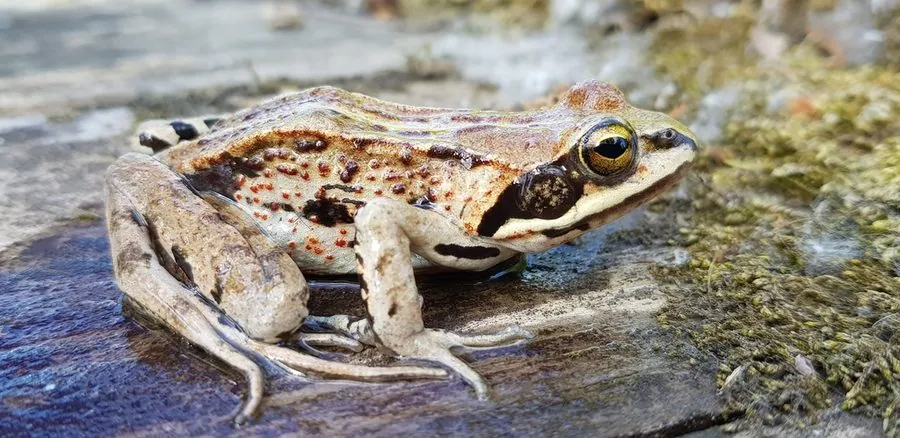

两栖动物 · 动物界
黑龙江林蛙 Rana amurensis

黑龙江流域的耐寒蛙类，体色棕褐、腹部常带红色斑点，能在接近冰点的水中活动，春季在沼泽与浅塘中繁殖。
- 分类
- 门脊索动物门纲两栖纲目无尾目科蛙科属蛙属
- 栖息环境
- 黑龙江流域的沼泽、湿地、河漫滩、林间水洼与缓流溪流
- 地理分布
- 中国黑龙江、吉林、内蒙古东北部，以及俄罗斯西伯利亚东部和朝鲜半岛北部
- 保护级别
- IUCN 无危（LC）；中国“三有”保护动物
物种志
黑龙江林蛙体长 45–60 mm，雌蛙略大。头部扁平，吻端钝圆，背部皮肤较粗糙，体色棕褐、灰褐或橄榄褐，常带深色斑点，背侧褶明显；腹部浅黄或灰白，常散布红色小斑点，四肢有横纹，后肢较短。
它们分布于中国黑龙江、吉林、内蒙古东北部，以及俄罗斯西伯利亚东部和朝鲜半岛北部，栖息于沼泽、湿地、河漫滩、林间水洼与溪流附近。黑龙江林蛙耐寒性强，春季冰雪刚融化时即开始繁殖，在浅水沼泽和水塘中产卵，卵块附着在水草上。蝌蚪约一个多月完成变态。成蛙以昆虫、蜘蛛、蚯蚓为食，秋季大量进食积累能量，冬季潜入深水或泥底越冬。它们对湿地环境依赖度高，湿地排水会直接影响其种群。
形态与习性
- 食性昆虫、蜘蛛和蚯蚓
- 体长45–60 mm，雌蛙略大
- 繁殖春季冰雪融化后产卵于浅水沼泽
- 耐寒可在接近冰点的水中活动
- 越冬潜入深水或泥底
- 特征腹部常散布红色小斑点
趣味知识
- 它是分布最北的蛙类之一，能在接近冰点的水中活动。
- 冰雪刚融化时它就开始繁殖，卵块常附着在浅水的水草上。
- 腹部那些红色小斑点是它区别于其他林蛙的重要特征。